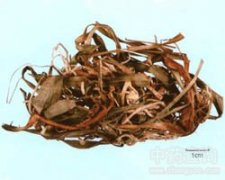

吉祥草

拼音
Jí Xiánɡ Cǎo
别名
小青胆、小叶万年青、玉带草、观音草
来源
为百合科吉祥草属植物吉祥草Reineckea carnea （Andr.）Kunth，以全草入药。全年可采，洗净，鲜用或切段晒干。
生境分布
生长于山沟阴处、林边、草坡及疏林下，尤以低山地区为多，分布我国长江以南，以西南各地最为常见。产云南、贵州、广东、广西、四川、福建等地。
药材特点
常绿多年生草本。根状茎匍匐于地下及地上，带绿色，亦间有紫白色者，径达5毫米，有节，节上生须根。叶丛生于根状茎顶端或节部；线形、卵状披针形或线状披针形，无毛，全缘，无柄，先端尖或长尖，基部平阔，长7～50厘米，宽10～28毫米，脉平行，中脉显着，侧脉约9对。圆锥状花序生于叶腋，长达15厘米，无毛；花序柄长约8厘米；花两性，无柄，着生于苞腋；苞片卵形；花被6片，下端呈筒状，无毛，外面紫红色，内面淡粉红色或白色，开展后，各裂片反曲，顶端钝圆；雄蕊6，与花被裂片对生，着生于花被筒内面之上端，花丝长约5毫米，白色或淡粉红色，花粉囊2室，呈淡蓝色，背面着生于花丝顶端，纵裂；子房上位，花柱长达1厘米，柱头头状，子房3室，每室具数胚珠。浆果圆形，径约1厘米，红色。种子白色，径约2毫米。花期冬末、春初。
性状
干燥全草呈黄褐色，根茎细长，节明显，节上有残留的膜质鳞叶，并有少数弯曲卷缩的须状根，叶皱缩。
性味
甘，平。
功能主治
润肺止咳，祛风，接骨。用于肺结核，咳嗽咯血，慢性支气管炎，哮喘，风湿性关节炎；外用治跌打损伤，骨折。
用法用量
0.5～1两；外用适量，捣烂酒炒敷患处。
化学成分
全草含多种皂甙。从中分得奇梯皂甙元，薯蓣皂甙元、五羟螺皂甙元、铃兰皂甙元、异万年青皂甙元，异吉祥草皂甙元、吉祥草皂甙元、异卡尔嫩皂甙元，尚分出β-谷甾醇葡萄糖甙。
药理作用
1：无药理作用
摘录
《全国中草药汇编》